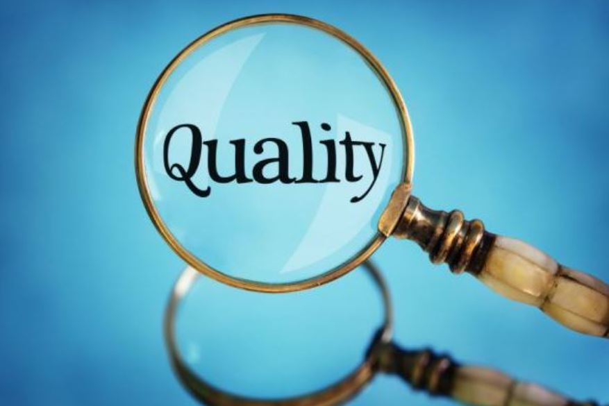
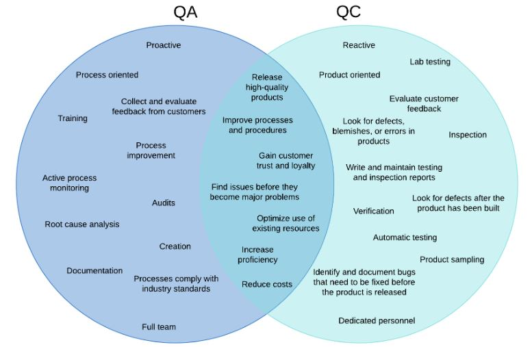

What is Quality?
Quality refers to the degree of excellence or superiority of a product,
service, or process. It is a multidimensional concept that encompasses various
aspects and characteristics, depending on the context in which it is applied.
In general, quality can be defined as meeting or exceeding customer expectations
and requirements.

What is ASQ saying about quality
The American Society for Quality (ASQ) defines quality as "the totality of
features and characteristics of a product or service that bear on its ability
to satisfy stated or implied needs." This definition emphasizes the
importance of meeting customer requirements and expectations in determining
the quality of a product or service.

Visit ASQ
Difference between QA and QC

| Quality Control(QC) |
Quality Assurance(QA) |
| Product oriented |
Process oriented |
| Defect Identification |
Defect Prevention |
| Reactive approach |
Proactive approach |
| Corrective tool |
Managerial tool |
| Specific team's responsibility |
Everyone's responsibility |
Quality Tools
- Checksheet
- Fishbone Diagram [Cause and Effect analysis]
- Histogram
- Pareto Chart
- Control Chart
- Scatter Diagram
- Stratification
Click the below link to login
Login